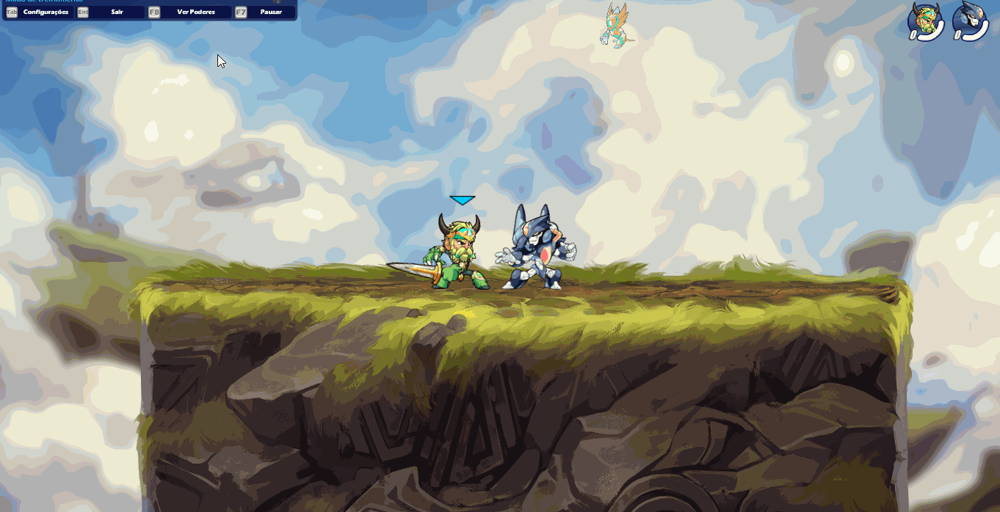
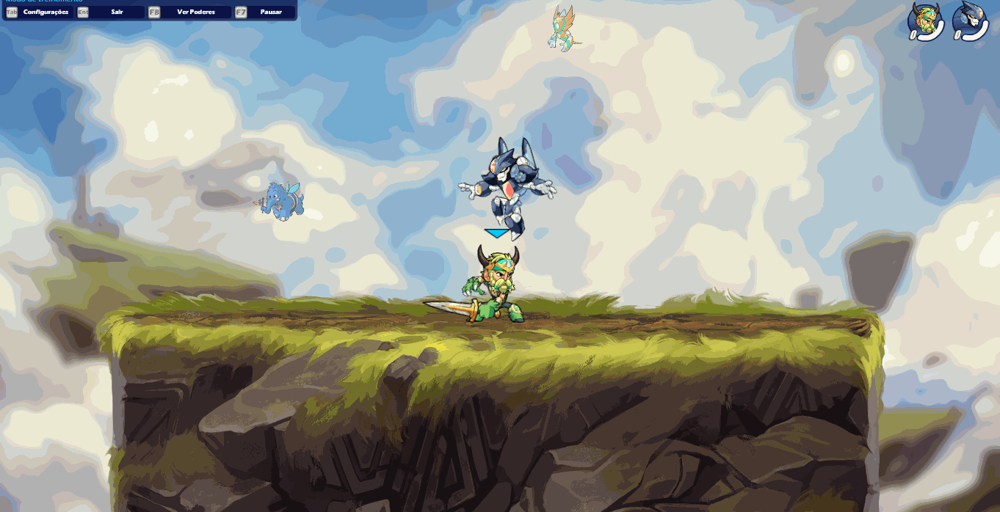
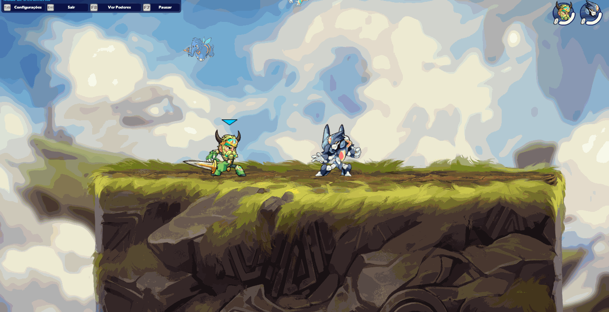
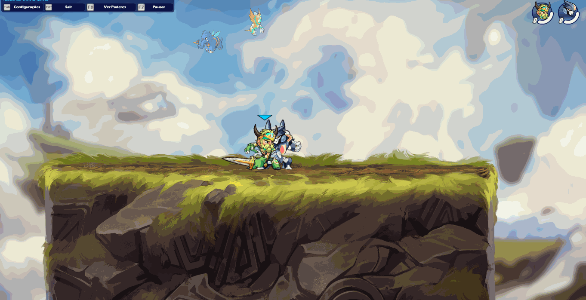
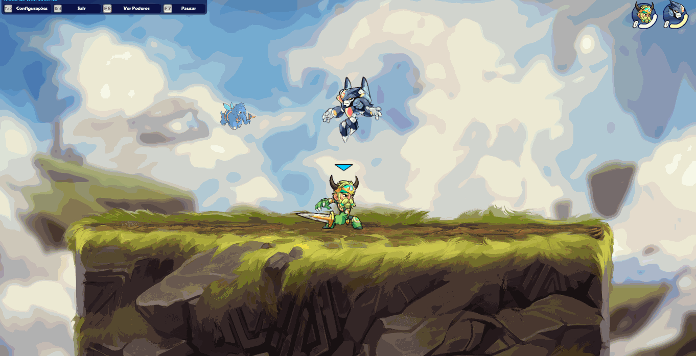
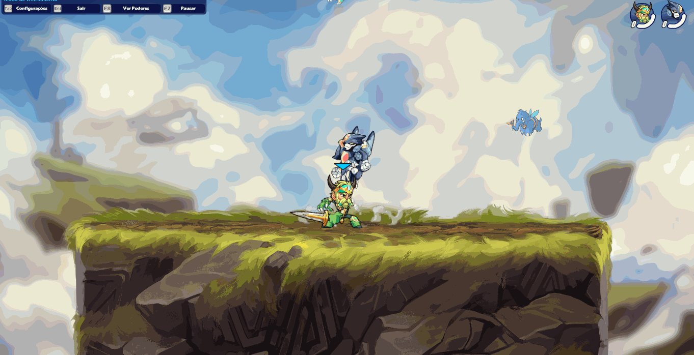

"A espada no Brawlhalla é mais do que uma arma, é uma extensão da mente e do corpo do jogador, capaz de cortar através dos obstáculos mais difíceis e abrir caminho para a vitória."
"A espada no Brawlhalla é mais do que uma arma, é uma extensão da mente e do corpo do jogador, capaz de cortar através dos obstáculos mais difíceis e abrir caminho para a vitória."
A espada é uma das armas mais clássicas e versáteis do Brawlhalla. Com seu alcance médio e
velocidade de ataque rápida, a espada é uma escolha popular entre jogadores que preferem um
estilo de jogo mais ofensivo e ágil.
Um dos pontos fortes da espada é sua capacidade de
combinações e movimentos fluidos. Com ataques rápidos e precisos,
os jogadores podem criar combos devastadores e manobrar rapidamente
pelo campo de batalha. Além disso, a espada também é capaz de atacar em
múltiplas direções, o que a torna uma arma excelente para defesa.
A Espada é uma lâmina leve e de mão única. Uma arma ágil,
os portadores de espadas atacarão seus oponentes com uma enxurrada de ataques rápidos.


O usa a sua espada para atacar na lateral. Se um inimigo for pego no ataque, receberá no maximo 3 hits (o 3º hit causa knockback).

O usuário gira com sua espada em torno de seu corpo enquanto corre para a frente, ao atigir o inimigo é levado junto com o usuário.
O usuário ataca sua espada para a frente perto do chão. Se o ataque for bem sucedido, o oponente é lançado para cima, facilitando na criação de true combos ou strings.
O usuário ataca com sua espada diretamente acima de si mesmo, acertando os oponentes que estão no ar.
O usuário ataque para frente no ar, lançando seu oponente para longe
O usuário ataca com sua espada diretamente abaixo de si mesmo, (O ataque é feito no ar).
O usuário gira rapidamente enquanto sobe, acertando qualquer um que o toque.
O usuário desce no ar enquanto golpeia para baixo segurando a espada.
